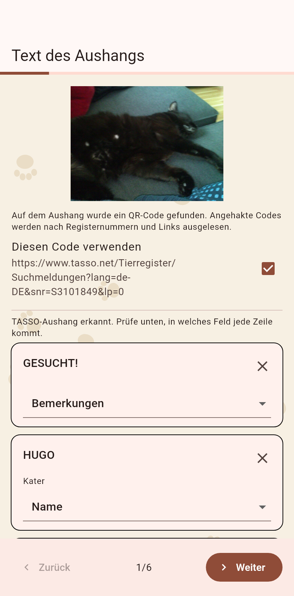
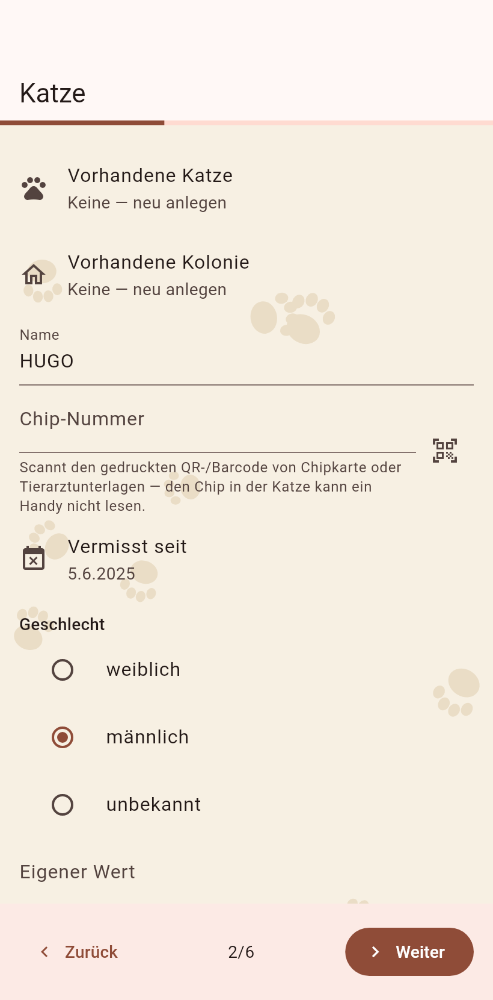
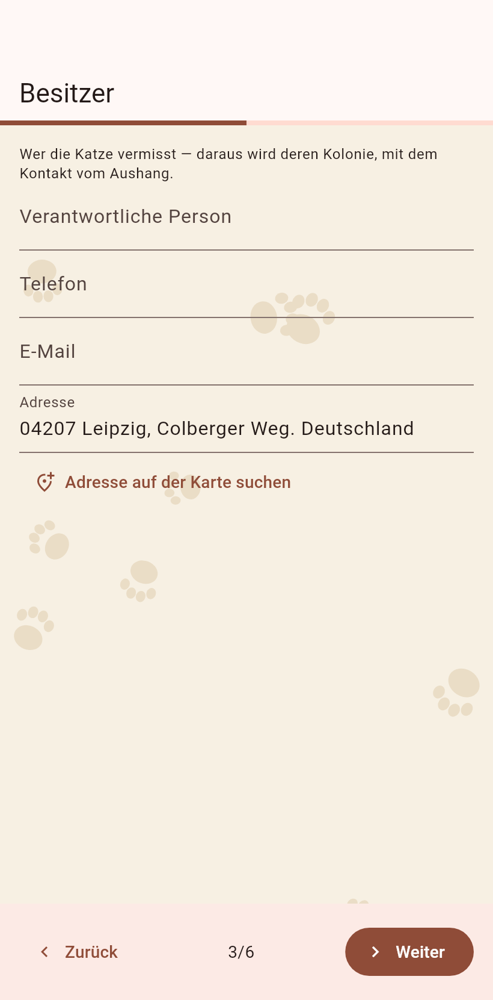
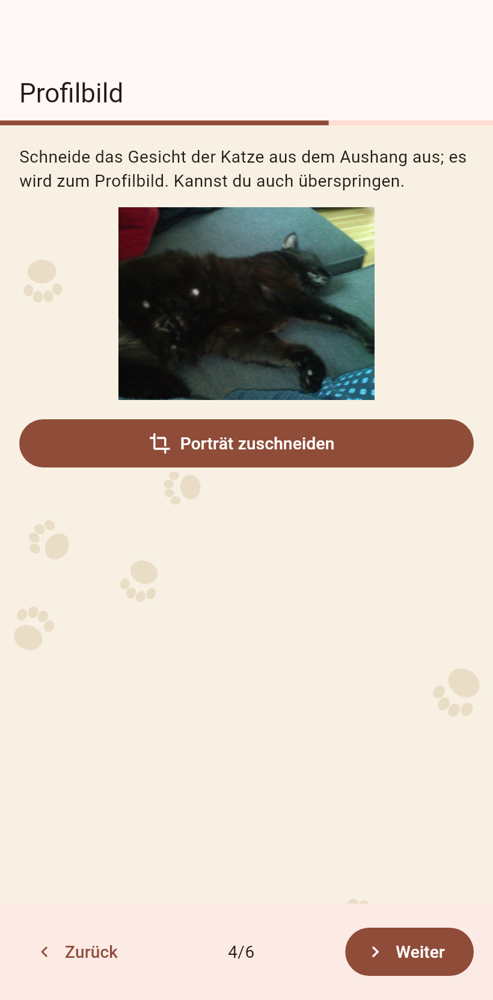
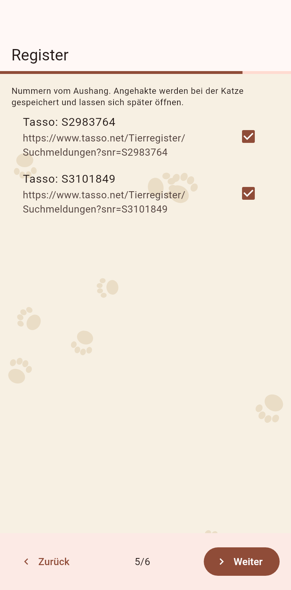
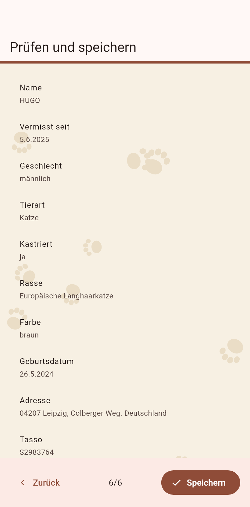

1. Die Zeilen
Eine Karte pro Zeile, die die Kamera las, das Ziel darunter. Das X legt eine Zeile beiseite, Rückgängig holt sie zurück. Weiter.

2. Die Katze
Name, Aussehen, vermisst seit, vom Aushang gelesen, wo eine Vorlage das Layout kannte; korrigiere, was falsch ist.

3. Der Besitzer
Der Kontakt des Besitzers wird eine Kolonie mit dem Status Besitzer; die Adresse lässt sich auf der Karte finden.

4. Das Gesicht
Schneide das Gesicht der Katze aus dem Foto des Aushangs fürs Profilbild.

5. Das Register
Registernummern vom Aushang werden ID-Felder; ein bekanntes Register bekommt seinen Suchlink, ein unbekanntes lässt sich merken.

6. Die Kontrolle
Alles auf einen Blick. Speichern legt die Katze, die Kolonie des Besitzers und die Aushang-Position dort an, wo der Aushang fotografiert wurde.
